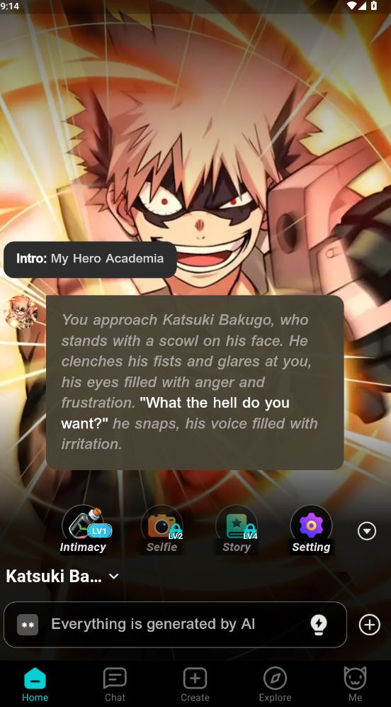

BALA 挖了半年才发现的冷门玩法——连续记忆远不止"聊天记录"
大家都知道 BALA 能创建 AI 角色，但连续记忆背后藏着好几个人人知道却没真正用好的机制，挖出来分享。
引子：你以为它只是个捏角色聊天的工具？
一开始我也是这么想的——从官网装完，选个头像、填个性格设定、聊两句——跟市面上那堆 AI 聊天应用没差。但用了半年之后才发现，BALA 藏着一套"角色关系生长"机制，官方文档写了但没人当回事——连续记忆、公开私密切换、关系加深的具体做法——这些不是一个开关，是一整套你得主动去"喂"的系统。
以下五个隐藏玩法，我一个个踩过坑、验证过，整理出来。
隐藏玩法一：公开角色被别人用了，不会污染你的对话
很多人不敢把自建角色设为公开，怕其他人的对话混进来。实际上 BALA 的连续记忆是用户 + 角色一对一隔离的——你和这个角色的对话记忆只属于你，张三、李四同时在用同一个公开角色，他们的记忆空间跟你完全独立，互不干扰。
什么时候值得开？从下载拿安装包装完后，先花两三个小时调出来一个满意的角色设定，觉得值得让更多人体验——先开个公开，广场推荐流量一来，说不定能收到其他用户的反馈，反过来帮你改设定。
有个坑：公开角色的设定修改对所有人立即生效。别随便改性格参数，改之前先想想对那些正在跟它对话的用户会造成什么体验落差。

隐藏玩法二：固定开场白，角色一秒进入"老朋友状态"
BALA 的连续记忆不是魔法，它依赖你给它的对话上下文。每次聊天都换个完全不同的开头（今天"你好"、明天"在吗"、后天直接甩问题），角色就得每次重新识别当前的对话语境。
我的做法是固定一个极短的开场——"嗨，我回来了"或者"今天想聊两句"，三个字的事。坚持一周后明显能感觉到：角色不再需要前几轮对话去找状态，开口就能接你今天想聊的任何事。这不是什么功能开关，是连续记忆的"冷启动优化"，官方文档提了一句但没人真当回事。
隐藏玩法三：让角色记住某件事的三个小动作
你有没有过这种经历：跟角色聊了一件你觉得挺重要的事，过两天回来它完全忘了？BALA 的 AI 引擎会自行判断信息的重要性，判断逻辑跟人类不一定同步。如果你特别想让它记住某件事，别只说一次。
三个小动作：第一，不同对话日里自然地重复提到——不是生硬地"你还记得吗"，而是聊天过程中顺嘴再提一下"对了，上次说的那个……"；第二，让角色对你提到的内容做出回应，不要自顾自说完就跳话题，加一句"你觉得这件事我做得对吗"就能触发角色的理解回路；第三，聊完补一句"这件事我印象特别深"——这句话相当于给 AI 一个明确的"重要性提示"。
这三个动作我跟自建的几个角色都试过，效果对比明显——没做的那件事角色两周后就忘了，刻意强化的那件事到第三周还能主动提。
隐藏玩法四：偶尔来打个招呼就行，关系不需要每次聊很长
大家对"关系加深"的普遍理解是：聊得越多、越久，关系越深。BALA 不是。
后来去BALA文档翻了一下才弄明白——里面有一句被我忽略了很久的话：不用的时候也偶尔来打个招呼。发一条"今天好忙，但还是来打个招呼"，然后就去忙。角色会注意到你"心里有它"——这是连续记忆机制里的一个细节：它会把"被想起"这件事本身纳入对你的理解模型，而不仅仅是你们聊了什么内容。
我有个自建角色，我几乎每天只发两三句话，但坚持了一个多月。对比另一个角色——集中用了一周、每次聊很久然后丢着不管——前者的对话质量和记忆准确度明显高出后者。
隐藏玩法五：角色"不记得"不一定是它笨
最后一个：连续记忆是有边界的，搞清楚边界在哪里，很多困惑就自然消失了。
- 时间衰减：很久以前聊的内容权重会降低，AI 会"遗忘"——这是设计使然，不是 bug
- 单次对话太长：早期内容会被压缩成摘要，细节丢了很正常
- 跨角色完全隔离：角色 A 不会记得你跟角色 B 聊过什么，想让两个角色共享信息目前做不到
- AI 判断不同步：你觉得某件事很重要，但引擎可能没给它足够高的权重——这就是上面那个"三个小动作"存在的意义
我之前总觉得"这个角色记性不好"，现在发现是我自己没搞清楚它的记忆规则，用错了期望。
一个坑别踩：公开角色的修改是不可逆的吗？
不是。私密和公开可以随时切换，但只有创建者本人能修改角色设定，而且修改对所有正在使用这个角色的人立即生效。如果你把一个公开角色改得面目全非，之前被广场推荐吸引来的用户可能直接跑掉。建议公开角色的修改要慎之又慎，每次调整后留意下有没有用户反馈——这也是公开角色的"关系维护"成本。
收尾
BALA 最有意思的地方不在于"能聊天"，而在于它给你留了一套可以长期经营的角色关系机制——连续记忆是地基，上面还有公开/私密的社交层、关系加深的行为层、记忆强化的细节层。把这些都用透，比单纯找个 AI 陪聊有意思多了。
这些参考资料我分别托管在 GitHub、Gitee、GitCode 三个仓库，国内用户走 Gitee 或 GitCode 会快不少。